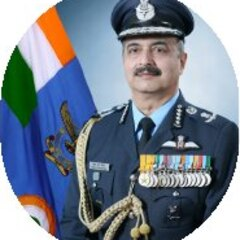
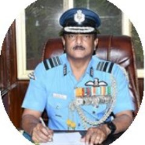
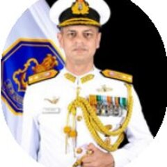

The people behind the machines
Apollyon is a team of twenty, up from nine at the start of 2026. It is deliberately built around a narrow set of disciplines the company refuses to buy in: propulsion, flight control, machine learning, airframe design and manufacturing. A board of advisors from the services, DRDO, space and industry reviews the work as it moves.
Two undergraduates with a workshop
Jayant and Sourya started the company in May 2025 from a hostel room at BITS Pilani Hyderabad, with 3D printers and a test bench. Both still hold the technical leads they took on at the start.
One team across propulsion, code and airframes
Nine engineering and operations roles, plus the wider group around them. Everyone listed here works on hardware that has flown.
A board that has run the systems we are building
Seven advisors from the Air Force, the Navy, DRDO, space and industry. They review programme decisions, test plans and qualification evidence as they accumulate.



What the field, and the press, have said
Anand Mahindra
“The future cutting edge of India's defence capability will be shaped by startups. This one just built a drone that outperforms the Shahed. Don't be deceived by the rudimentary lab or the untidy test field. These teams are hungry, lean, and they rebuild their product every time the battlefield changes. We need to nurture them like national assets.”
Piyush Goyal
“From a hostel room to the war zone! So proud of this startup built by two budding engineers that now has delivery orders from the Army for their ‘Made In India’ kamikaze drones.”
The Times of India
Coverage of the first Army orders: radar-resistant airframes reaching 300 km/h with a 1 kg payload, built by two students and delivered to units across multiple states. The headline read “Look who's making kamikaze drones for Army: two 20-year-old engineering students.”
Longer assessments from the space and venture ecosystem sit in the company history. The programmes these people run are on the product register, and the record behind them is in the full record.